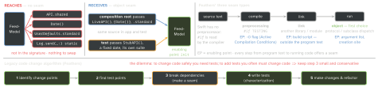

testing · folio
In one line: A seam is “a place where you can alter behavior in your program without
editing in that place”; every seam has an enabling point, “a place where you can make
the decision to use one behavior or another” (Michael Feathers, Working Effectively with
Legacy Code, 2004). In Swift the seam is a protocol or closure the type
receives, and the enabling point is its init. Code that reaches for
.shared, Date() or UserDefaults.standard has none.
Download PDF Print view LaTeX source


Seams — the rules
- The source is the same in production and test; only the enabling point differs.
- An object created and used in the same method is no seam — nothing can choose its type. Pass it in and the argument list becomes the enabling point.
- Object seams are “the best choice in object-oriented languages”; preprocessing and link seams are “not as explicit”, their tests hard to maintain — keep them for pervasive dependencies, and make test vs production obvious.
- Two reasons to break a dependency: sensing (see values the code computes but hides) and separation (stand the code up in a harness at all).
- Fowler (2024): a seam also hosts probes and redirects flow to new modules when displacing a legacy system.
- Apple (WWDC17): testable code gives control over inputs, visibility into outputs, no hidden state — via protocols + parameters, side effects kept apart.
Reaches for → receives → the test passes
| reaches for | receives | a test passes |
|---|---|---|
X.shared | a protocol (any XClient) | stub / fake |
Date(), Date.now | now: () -> Date | { Date(timeIntervalSince1970: 0) } |
Task.sleep, timers | any Clock<Duration> (iOS 16) | TestClock, ImmediateClock (swift-clocks); a clock’s now is an Instant, not a Date |
UUID() | () -> UUID | a counter |
.random(in:), shuffled() | using: inout some RandomNumberGenerator | a seeded generator — Apple: “repeatable … for testing” |
UserDefaults.standard | a UserDefaults | UserDefaults(suiteName:), then removePersistentDomain(forName:) |
FileManager + Documents | a base-directory URL | URL.temporaryDirectory + a UUID folder |
NotificationCenter.default | a NotificationCenter | NotificationCenter() — a private center |
UIApplication.shared | a protocol of the members used | a spy recording open(_:) |
Locale, TimeZone.current | the value | Locale(identifier:), TimeZone(secondsFromGMT: 0) |
@testable import and the test host
- Tests reach
internalonly with@testable importand a module compiled with testing enabled; neverfileprivate/private— needing those means “extract a type”, not “make itpublic”. They may subclass / override non-finalpublicandinternalclasses (SE-0117). - Enable Testability (
ENABLE_TESTABILITY) passes-enable-testingand-rdynamic, drops-fvisibility=hiddenand strip — “tests running slower”, so Debug only. A Release-built module: “Module … was not compiled for testing”. - Test Host set ⇒ Xcode starts the app and loads the test bundle into it; XCTest waits for
didFinishLaunching— the composition root runs first. Apple: skip non-essential launch work via a launch argument, or use a host-less target.
Swift 6 concurrency meets test hooks
- SE-0412: every static or global stored property is global-actor isolated or an immutable
Sendablevalue (error in Swift 6 mode) — astatic var sharedtest hook needs@MainActorornonisolated(unsafe). - Swift Testing runs tests in parallel in one process (task groups);
.serializedorders only its own suite — a swapped global still races other suites. - Parallel-safe ambient seam: a
@TaskLocalvalue + aTestScopingtrait (Swift 6.1) wrapping each test in$current.withValue(mock) { try await function() }. - New app projects in Xcode 26 turn on main-actor mode (SE-0466, Swift 6.2, per module): app types become
@MainActor, so testsawaitthem or run@MainActor.
Traps
- Live-default leak: one forgotten argument and the test gets the real
LiveFeedAPI— network in a unit test. Pass every dependency in tests. - A suite does not isolate
register(defaults:): the registration and argument domains are shared by everyUserDefaultsinstance. - 8 init parameters is an SRP smell, not a DI problem. DI ≠ DIP: injecting a concrete class is DI without inversion.
Legacy code
- “Legacy code is simply code without tests” (WELC preface) — not old code. Edit and Pray (plan, edit, then poke around — “pretty much the industry standard”) vs Cover and Modify (tests as the safety net).
- Four reasons to change: feature · bug · design · resource usage. Refactoring changes structure only, optimising only resource usage — both hold functionality invariant. Before any change ask: what changes · how will we know it is right · how will we know nothing broke?
Dependency-breaking moves
WELC (examples in Java, C++, C, C#) catalogues 24 conservative edits in ch. 25; the Swift-relevant ones:
| Parameterize Constructor | init(api: any API = LiveAPI.shared) — every existing caller compiles unchanged |
| Parameterize Method | one method takes it: isExpired(now: Date = .now) |
| Extract Interface | a protocol of just what the SUT calls; the class conforms |
| Extract Implementer | rename the class LiveAPI; the old name becomes the protocol |
| Adapt Parameter | a parameter type you cannot fake → your own narrow protocol + an adapter. Swift needs no wrapper: the framework class conforms in an extension (Apple, WWDC18) |
| Subclass & Override Method (+ Extract & Override Call / Getter) | a test subclass overrides the I/O; needs a non-final class and the method in the class body — extension members cannot be overridden unless @objc |
| Introduce Static Setter | a singleton gains a setter for tests (see SE-0412, left) |
| Break Out Method Object | monster method → new type; its locals become fields |
| Sprout Method / Class | (ch. 6) new code in a new, test-driven unit; old code only calls it |
| Wrap Method / Class | rename the old method; a new one with its name runs new + old |
Characterization tests (golden master)
- “Document your system’s actual behavior, not check for the behavior you wish your system had” (Feathers) — a system in production “becomes its own specification”. Keep a surprising result pinned until it is confirmed a bug.
- Recipe: code in a harness → assert a value you know is wrong → the failure prints the actual one → expect that → repeat.
- Tools: swift-snapshot-testing records a missing reference and fails once;
.dumpsnapshots any value viaMirror;assertInlineSnapshotwrites into the test file. ApprovalTests.Swift:.receivedvs.approvedfiles.
Example — Parameterize Constructor
final class FeedModel {
private let api: any FeedAPI; private let now: () -> Date
private let defaults: UserDefaults
init(api: any FeedAPI = LiveFeedAPI.shared, // old callers
now: @escaping () -> Date = { Date() }, // unchanged
defaults: UserDefaults = .standard) {
self.api = api; self.now = now; self.defaults = defaults } }
// test
let suite = "test-\(UUID())"
let d = UserDefaults(suiteName: suite)!
defer { d.removePersistentDomain(forName: suite) }
let sut = FeedModel(api: StubFeedAPI(posts: []),
now: { Date(timeIntervalSince1970: 0) }, defaults: d)Designs that make seams cheap
- DI (name settled by Fowler and IoC authors, 2004): constructor (“type 3”, PicoContainer) · setter (type 2, Spring) · interface injection (type 1, Avalon). A service locator is asked: every user depends on it, and its needs show only as locator calls in the body. Fowler: the choice matters less than separating configuration from use; Seemann (2010): an anti-pattern.
- Humble Object (Meszaros): move logic out of what is hard to test (view, controller) until it holds the minimum of behaviour — MVVM, Passive View.
- Functional core, imperative shell (Bernhardt, 2012): decisions are pure functions on values; a thin shell does I/O. The core needs no doubles.